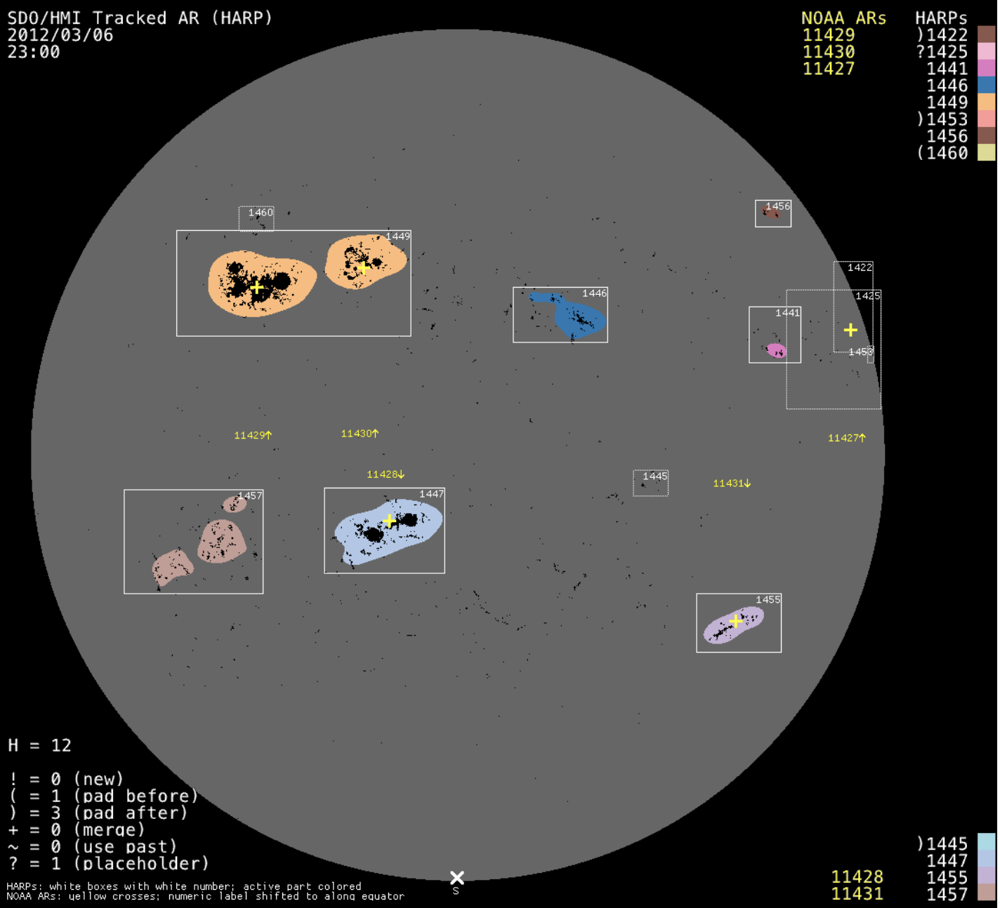

Progress Update 1 (9/28/2021)
I created my initial research idea of solar flare prediction. Building upon the shortcomings of my project last year, I envision this project to complement our previous findings as well as provide a possible pipeline into further analyzing stellar activity of distant stars.

Progress Update 2 (10/13/2021)
I found a data source and began thinking about how I would analyze this data. One key step would be to extract features from the Sun images, so I reserached different methods of doing this.

Progress Update 3 (10/25/2021)
After the feature extraction is complete (preprocessing), I thought about what ML model I would use and what exactly it was I'm trying to find. Since I'm using time-series image data, a CNN-LSTM seems to be the most promising.